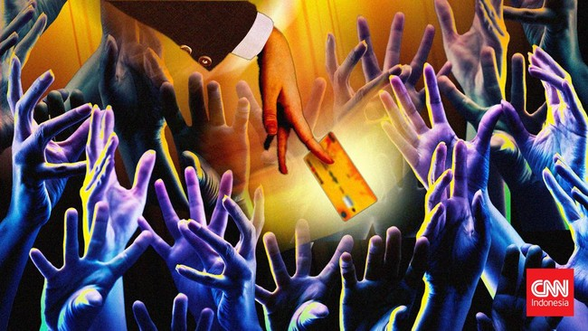

Syahrul Ramadan | CNN Indonesia
Rabu, 13 Mar 2024 13:56 WIB
Senin (4/3) pekan lalu, gawai Puteri ramai notifikasi. Grup WhatsApp pengurus KJMU di kampusnya penuh keluhan. Mereka mengeluhkan Data Terpadu Kesejahteraan Sosial (DTKS) tiba-tiba berubah menjadi tidak layak dan tak terdaftar.
Puteri pun segera mengecek DTKS di laman p4op.jakarta.go.id/kjmu. Hasilnya, dia dinyatakan tidak layak menerima KJMU dengan pemeringkatan kesejahteraan (desil) 6.